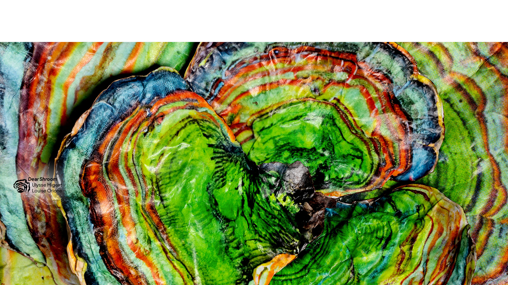
Dear Shroom
Exposition spéculative qui imagine une langue future à travers un monde fictionnel construit entre recherche, écriture et dispositif multimédia.
Novembre 2024 - Novembre 2025
Dear Shroom est un projet hybride mêlant écriture, fanzine, objet, 3D et sérigraphie, réalisé en collaboration avec Ulysse Migeat pour l’exposition « Systèmes, comment s’écrit demain ? » à la BULAC (2025). Cette exposition a été conçue et dirigée par l’ensemble de la promotion de DSAA DCN de l’École Estienne.
À partir des 80 systèmes d’écriture de la bibliothèque des langues et civilisations, nous avons développé un monde fictionnel et une langue spéculative autour d’un organisme fictif, le mycotel. Ce travail a été nourri par des échanges avec des intervenant·es, notamment Florian Targa (historien des langues, INALCO) et Ketty Steward (autrice française de science-fiction engagée).
L’exposition est accompagnée d’un site web et d’un teaser, retraçant l’ensemble du dispositif, consultable ci-dessous.
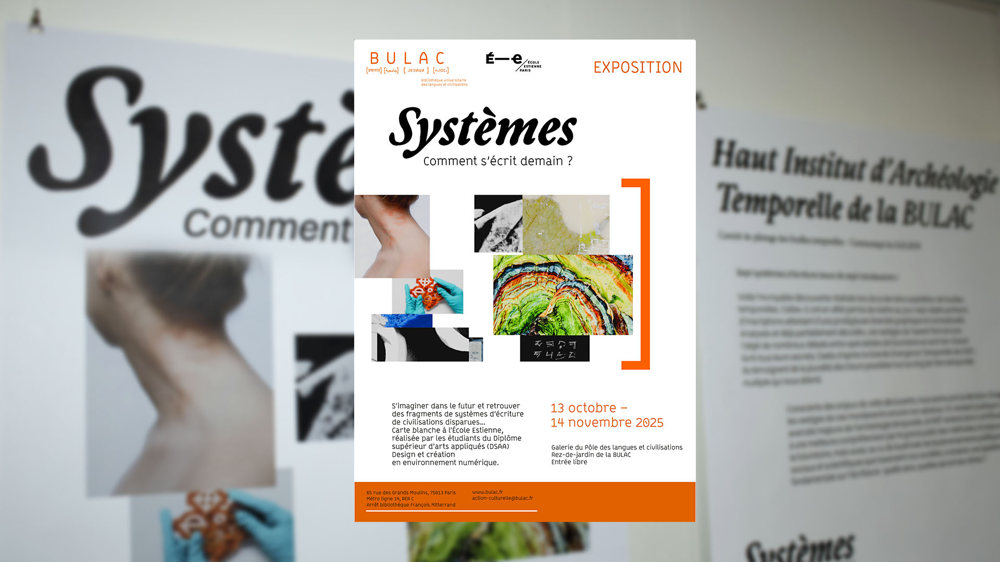
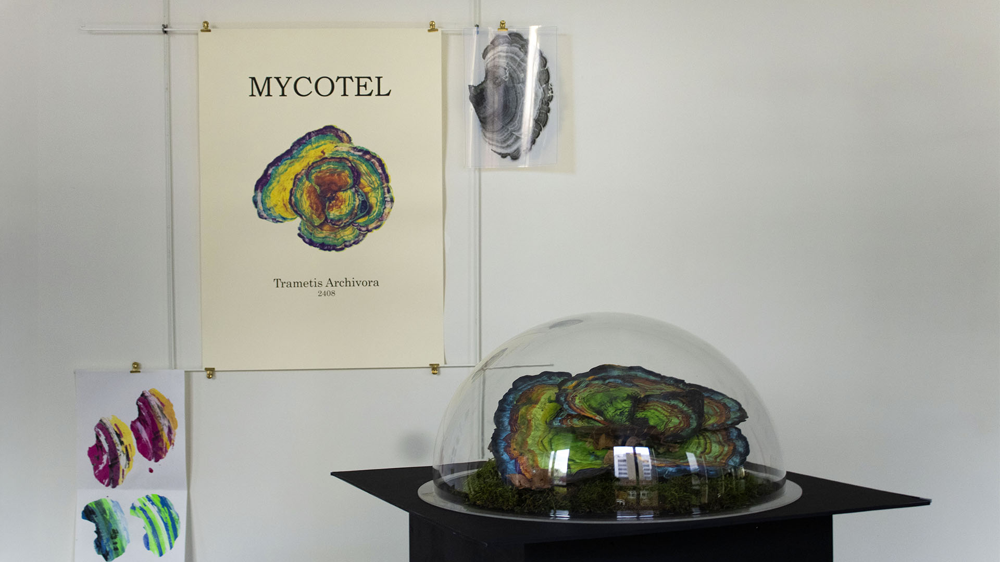
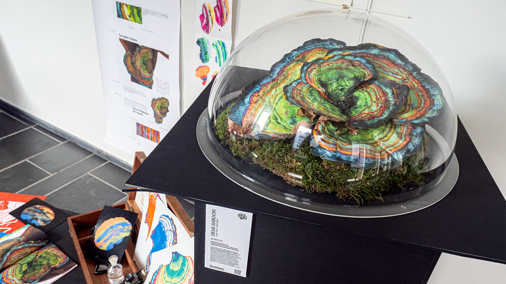
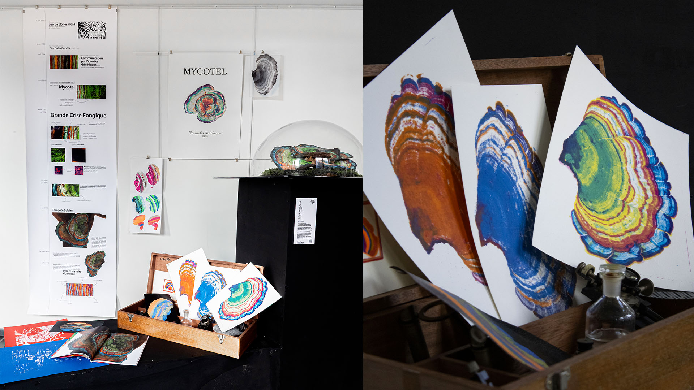
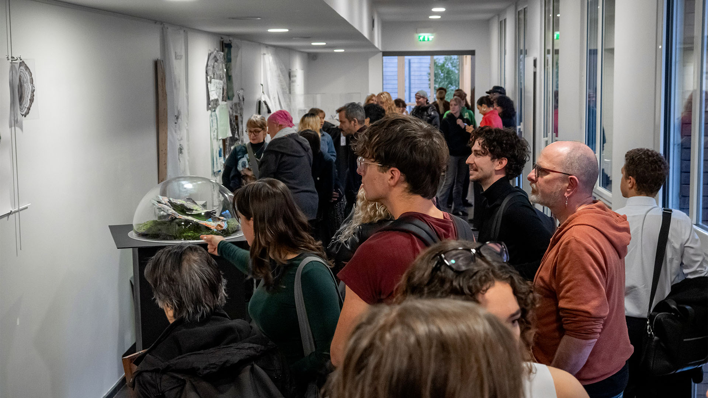
Le fanzine “Fungzine” rassemble des expérimentations visuelles produites tout au long du processus créatif, ainsi que des extraits du journal de bord d’un historien fictif ayant découvert le mycotel dans le futur et commencé à en déchiffrer les strates.
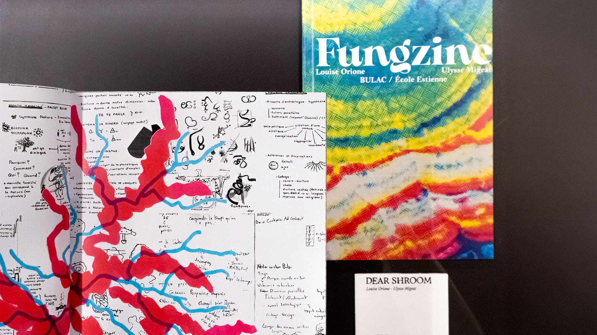
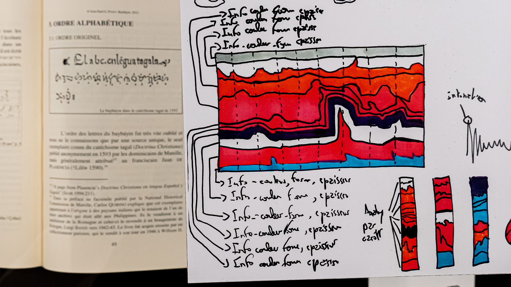
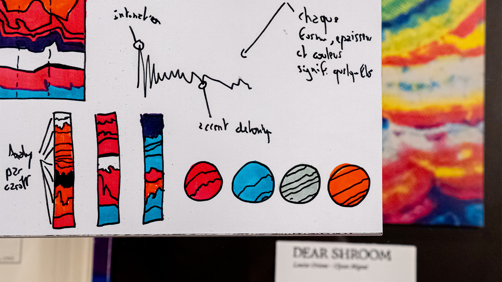
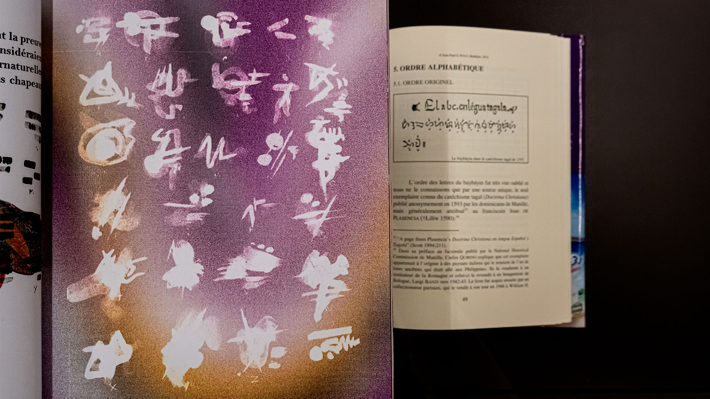
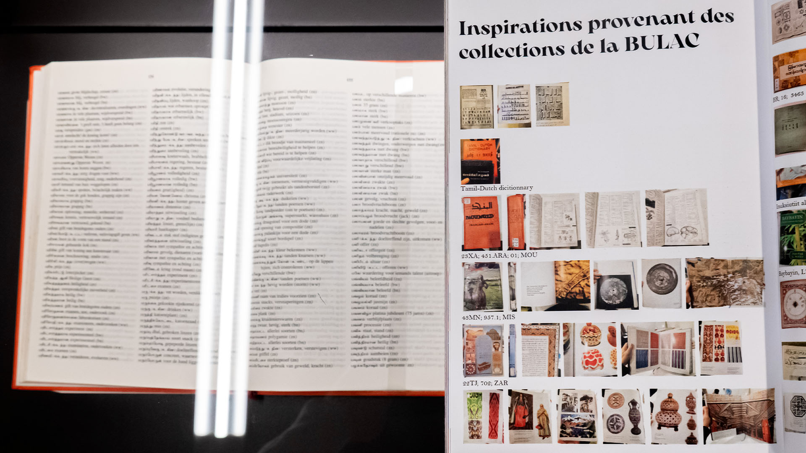
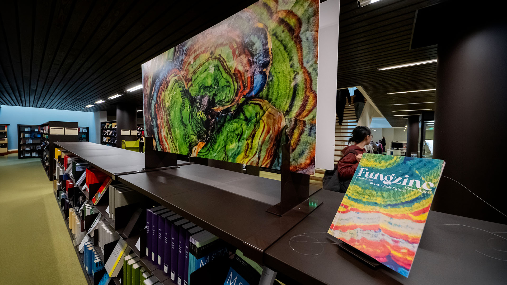
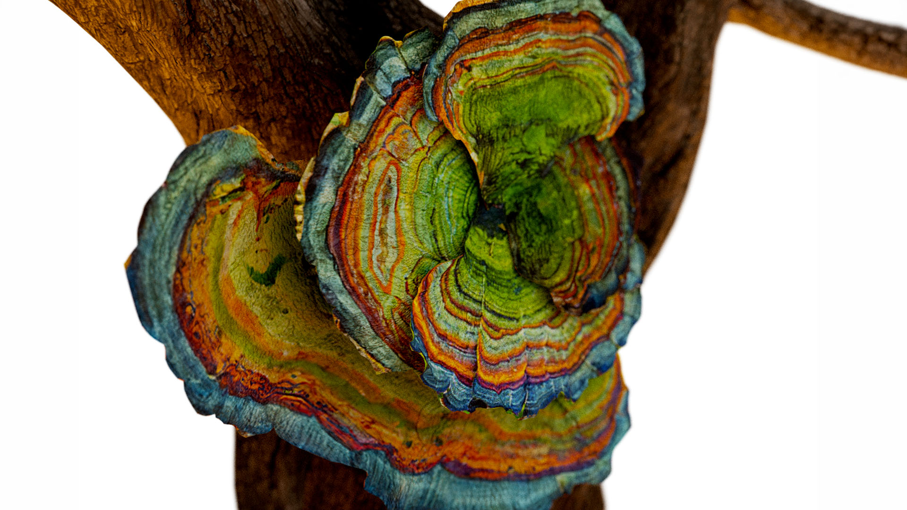
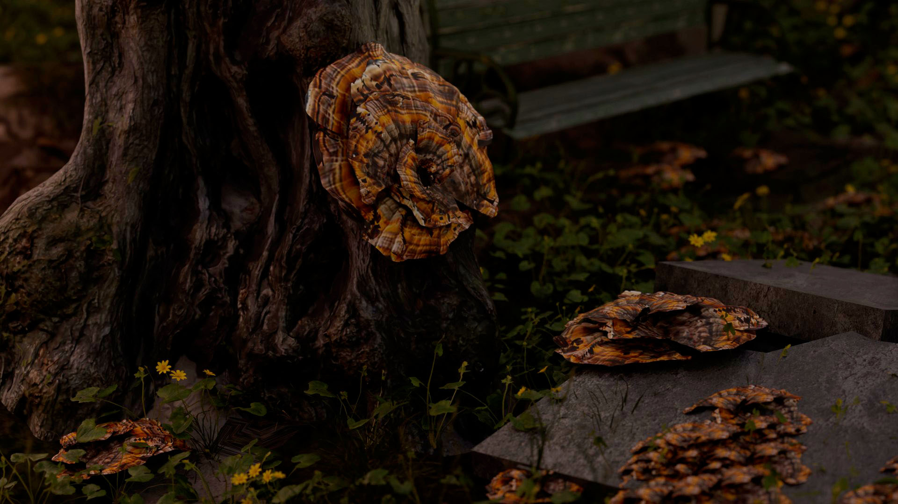
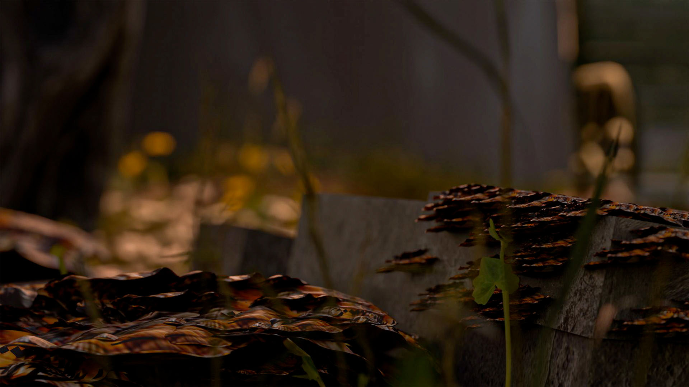